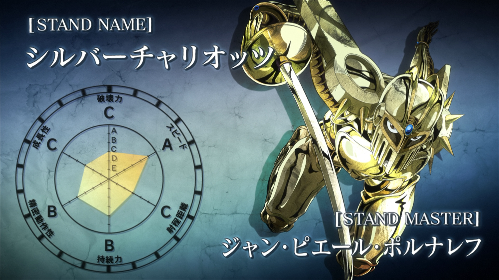

Кратко
Стенд - это физическое проявление "жизненной энергии" человека.Это сила, уникальная для серии Невероятные приключения ДжоДжо.Стенд - это сущность, психически созданная её владельцем, обычно называемым Пользователем стенда. Он рассматривается как физическое проявление духовной силы пользователя. Стенд обычно представляет собой фигуру, парящую рядом с пользователем и обладающую способностями, отличными от обычных людей, которые, в зависимости от пользователя стенда, могут быть использованы для добра или зла.
Теперь поподробнее.
Стенды определяются как воплощения «жизненной энергии», способности которой даются визуальной форме.Стенд также может представлять собой проявление «духа» человека и в какой-то мере воплощает психику человека.Помимо этого определения, Стенды представляются в самых разных формах и с различным поведением, если они вообще являются разумными. Они следуют свободным наборам правил, которые регулярно нарушаются, и нет реального стандарта, с помощью которого можно полностью классифицировать Стенды. Как воплощение чьей-то психики, Стенды столь же разнообразны, как человеческие умы.
Владелец и стенд.

Стенд создается из чьей-то психики (людей, животных и др.). Это лицо называется Владельцем стенда. Он присваивает Стенду имя и использует его для различных целей. Если Стенд не привязан к конкретному объекту или не является автоматическим, он прикрепляется к телу пользователя. В этом случае любой ущерб, который несет Стенд, отражается на теле пользователя и наоборот.Поскольку Стенд воплощает психику своего владельца, они имеют крепкую психологическую связь. В первую очередь, Стенды обычно без вопросов подчиняются команде своих пользователей. Если владелец требует этого, стенд будет выполнять любую задачу в пределах своих возможностей, которые включают в себя нападение на кого-либо, защиту пользователя и т. д. В случае, если Стенд разумен, они могут иногда сообщать своему Владельцу, что приказ неразумный, но будут выполнять его все равно. Во-вторых, Стенды действуют для защиты своих пользователей. Стенды автоматически защищают своих пользователей от вреда.
Способности.
В общем, Стенд невидим для нормальных людей, но может взаимодействовать с обычными объектами. Это позволяет Пользователю использовать свой Стенд незаметно для подавляющего большинства населения.Стенд неуязвим для любого вреда, кроме как против другого Стенда или в случае причинения вреда его Пользователю Стенда. Также пользователи обладают способностью сокращать свои Стенды до микроскопического уровня. В общем каждый стенд обладает эзотерической и уникальной силой, которая определяет его и отличает его от других. 
Параметры стенда
Параметры Стенда или Статистика Стенда - это шесть статистических данных, используемых за пределами истории, для оценки возможностей стенда. Они находятся в порядке (по часовой стрелке сверху): Разрушительная сила, Скорость, Радиус, Выносливость/Прочность, Точность и Потенциал развития.